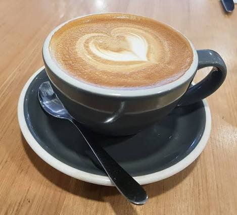
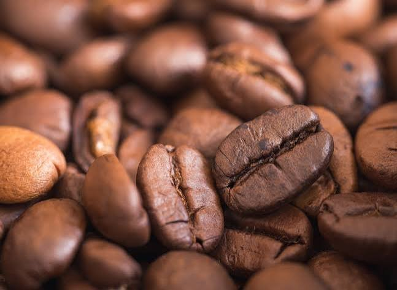
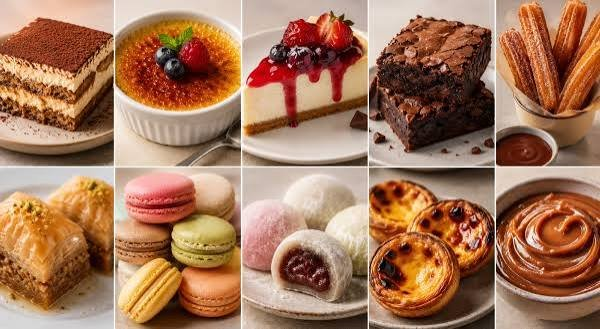
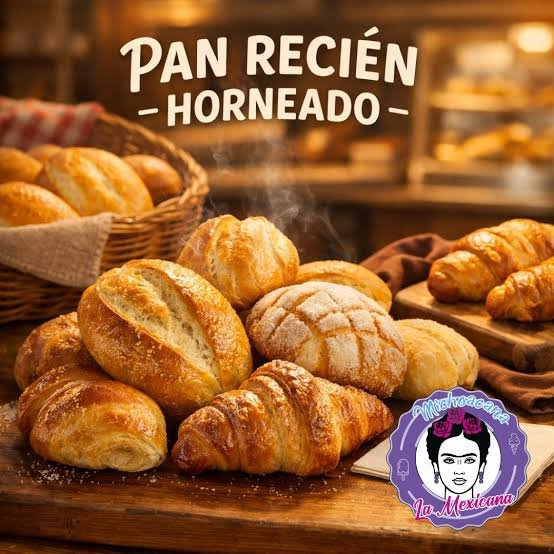
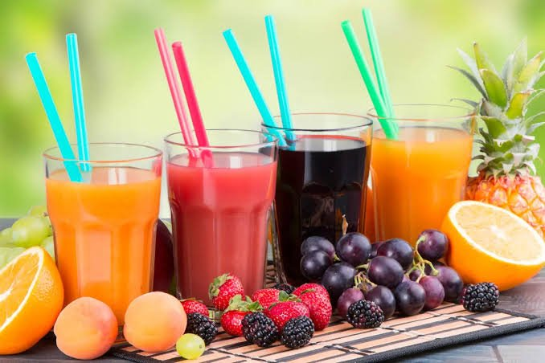
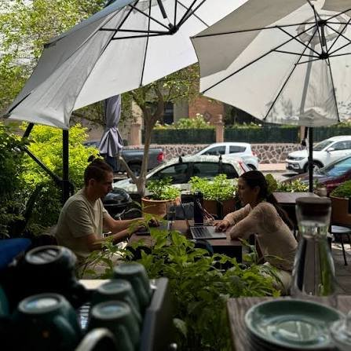
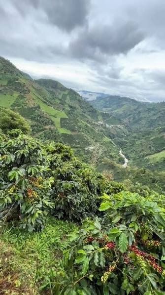
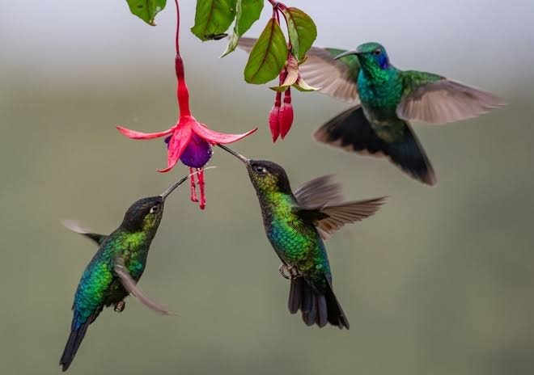

Un vistazo a Café Colibrí
Ambiente, productos y rincones de la casa

Nuestro latte de la casa
Granos de nuestras fincas aliadas
Pastel del día
Pan dulce recién horneado
Jugo natural de temporada
Un rincón verde para conversar
Las montañas de donde viene el café
Nuestro colibrí